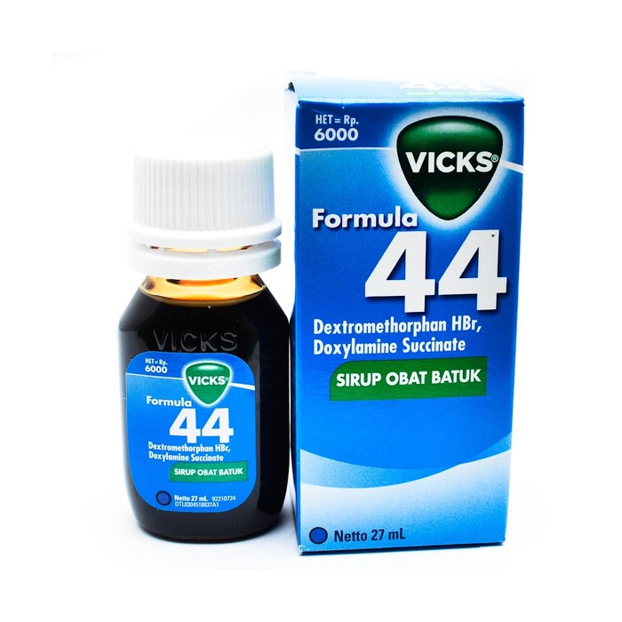

Formula 44

obat ini mengandung kombinasi zat aktif dextromethorphan dan Doxylamin Succinate. obat ini digunakan untuk mengatasi batuk berdahak, batuk kering, infeksi saluran nafas, maupun peradangan pada hidung.
Dosis : Dewasa (12 tahun ke atas) 2 sendok takar (10 ml) Diminum 4-6 kali per hari. Anak (6-12 tahun) 1 sendom takar (5 ml).